Skill Tree
There are 3 Basic Skills and 21 Sub Skills in the Skill Tree. By investing at least one point into these Basic Skills, players can unlock their respective sub-skills.
- Basic skills can be upgraded up to a maximum of 3 levels.
- Sub skills can be upgraded up to a maximum of 5 levels.

Grimoire of Critical Hit – BASIC SKILL
This skill is the basic node of a skill tree focused on gaining an advantage against enemy player ships. By activating this skill, you unlock access to its linked sub skills. You must add at least 1 point to proceed.
| Skill Information | Tier 1 | Tier 2 | Tier 3 | Tier 4 | Tier 5 |
|---|---|---|---|---|---|
| Increase Cannonball Critical Hit Chance against Player | +2% | +3% | +5% | +10% | +20% |
Missile Enhancer – Sub Skill
A skill that gradually increases your rocket damage against players.
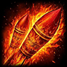
| Skill Information | Tier 1 | Tier 2 | Tier 3 | Tier 4 | Tier 5 |
|---|---|---|---|---|---|
| Rocket Damage against Players | +5% | +10% | +15% | +20% | +33% |
Explosive Essence – Sub Skill
When the Blackpowder item is activated, damage power increases against players and war island towers.
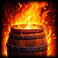
| Skill Information | Tier 1 | Tier 2 | Tier 3 | Tier 4 | Tier 5 |
|---|---|---|---|---|---|
| Increase Black Powder Damage against Player & Towers | +3% | +6% | +8% | +14% | +20% |
Agni's Wrath – Sub Skill
Increases your cannon damage against system ships (NPCs) in the game.
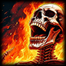
| Skill Information | Tier 1 | Tier 2 | Tier 3 | Tier 4 | Tier 5 |
|---|---|---|---|---|---|
| Increase your cannon damage against system ships | +1% | +2% | +4% | +6% | +10% |
Monster Eviscerator – Sub Skill
Increases the critical fire chance of harpoons against monsters.
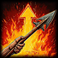
| Skill Information | Tier 1 | Tier 2 | Tier 3 | Tier 4 | Tier 5 |
|---|---|---|---|---|---|
| Increase Harpoon critical hit chance | +2% | +4% | +6% | +8% | +10% |
Swift Flame – Sub Skill
Decreases harpoon rifle cooldown against monsters.
Negative effect: starting from Tier 2, your harpoon damage gradually decreases up to Tier 5.
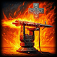
| Skill Information | Tier 1 | Tier 2 | Tier 3 | Tier 4 | Tier 5 |
|---|---|---|---|---|---|
| Decrease the Harpoons Cooldown | -0.5 sec | -0.75 sec | -1.0 sec | -1.25 sec | -1.50 sec |
| Decrease the Harpoon Damage | -8% | -15% | -30% | -50% |
Hunter's Fire – Sub Skill
Decreases rocket cooldown time against players.
| Skill Information | Tier 1 | Tier 2 | Tier 3 | Tier 4 | Tier 5 |
|---|---|---|---|---|---|
| Decrease Rockets reload time against players | -1 sec | -1.50 sec | -2 sec | -2.50 sec | -3.50 sec |
Fist of Agnis – Sub Skill
Increases cannon damage and critical chance against players.
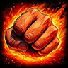
| Skill Information | Tier 1 | Tier 2 | Tier 3 | Tier 4 | Tier 5 |
|---|---|---|---|---|---|
| Increased Cannon Damage against players | 2% | 5% | 9% | 14% | 20% |
| Increased Cannon Critical Chance against players | 2% | 4% | 6% | 10% | 15% |
Poison Blade – BASIC SKILL
Basic skill focused on gaining an advantage against enemy players (War Pirates). Unlocks linked sub skills when at least 1 point is added.
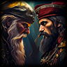
| Skill Information | Tier 1 | Tier 2 | Tier 3 | Tier 4 | Tier 5 |
|---|---|---|---|---|---|
| Increased the damage power of War Pirates | +3% | +7% | +12% | +18% | +25% |
Liquid Barrier – Sub Skill
Reduces enemy players rocket damage.
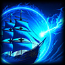
| Skill Information | Tier 1 | Tier 2 | Tier 3 | Tier 4 | Tier 5 |
|---|---|---|---|---|---|
| Reduces enemy players rocket damage | 5% | 10% | 15% | 20% | 30% |
Nereid Shield – Sub Skill
When Protective Shield item is activated, protection power increases against Players & Towers.
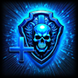
| Skill Information | Tier 1 | Tier 2 | Tier 3 | Tier 4 | Tier 5 |
|---|---|---|---|---|---|
| Increase Protective Shield protection against Player & Towers | 3% | 6% | 8% | 14% | 20% |
Atlantean Hammer – Sub Skill
Increases ship repairing value.
Positive effect: starting from Tier 1, ship repairing time decreases up to Tier 5.
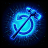
| Skill Information | Tier 1 | Tier 2 | Tier 3 | Tier 4 | Tier 5 |
|---|---|---|---|---|---|
| Increased Ship Repairing Value | 10% | 15% | 20% | 30% | 40% |
| Decreased Ship Repairing Time | -0.1 sec | -0.2 sec | -0.3 sec | -0.4 sec | -0.5 sec |
Sea Monster Destroyer – Sub Skill
Increases Harpoon damage.
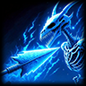
| Skill Information | Tier 1 | Tier 2 | Tier 3 | Tier 4 | Tier 5 |
|---|---|---|---|---|---|
| Increase Harpoon Damage | 5% | 10% | 15% | 20% | 30% |
Vital Source – Sub Skill
Increases Ship Base Hit Points.
Negative effect: starting from Tier 4, ship speed decreases up to Tier 5.
| Skill Information | Tier 1 | Tier 2 | Tier 3 | Tier 4 | Tier 5 |
|---|---|---|---|---|---|
| Increase Ship Hit Point | +5,000 HP | +10,000 HP | +15,000 HP | +20,000 HP | +35,000 HP |
| Decrease Ship Speed | -1% speed | -3% speed |
Eyes of Revenge – Sub Skill
Reflects incoming cannonball damage with a chance against players.
Negative effect: starting from Tier 3, Cannon Reload increases up to Tier 5.
Note: This skill activates the first reflect damage along with Tier 3 level to keep the game's combat mechanics stable.
| Skill Information | Tier 1 | Tier 2 | Tier 3 | Tier 4 | Tier 5 |
|---|---|---|---|---|---|
| Reflect incoming Cannonball damage to players | 0% | 0% | 2% | 6% | 10% |
| Reflect Chance of the Cannonball effect | 5% | 10% | 30% | 60% | 100% |
| Cannon Reload Increase | +0.25 sec | +0.50 sec | +0.75 sec |
Wave Gunner – Sub Skill
Increases Cannon Range against players, and from Tier 4 decreases cannon reload time.
Negative effect: starting from Tier 3, Cannon Damage decreases gradually up to Tier 5.
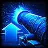
| Skill Information | Tier 1 | Tier 2 | Tier 3 | Tier 4 | Tier 5 |
|---|---|---|---|---|---|
| Increase Cannon Range against Player | +1 range | +2 range | +2 range | +3 range | +3 range |
| Cannon Reload Decrease | -0.25 sec | -0.50 sec | |||
| Cannon Damage | -10% | -8% | -5% |
Extra Experience – BASIC SKILL
Basic skill focused on gaining an advantage for earning Experience Points from NPCs. Unlocks linked sub skills when at least 1 point is added.
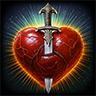
| Skill Information | Tier 1 | Tier 2 | Tier 3 | Tier 4 | Tier 5 |
|---|---|---|---|---|---|
| Gives more Experience Points when sinking NPC ships | +2% XP | +3% XP | +5% XP | +7% XP | +10% XP |
Hunting Relics – Sub Skill
Increases gold earned when killing monsters.
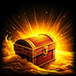
| Skill Information | Tier 1 | Tier 2 | Tier 3 | Tier 4 | Tier 5 |
|---|---|---|---|---|---|
| Increase earning gold when killing Monsters | +2% Gold | +5% Gold | +10% Gold | +15% Gold | +20% Gold |
Midas Touch – Sub Skill
Increases gold earned when sinking NPC ships.
| Skill Information | Tier 1 | Tier 2 | Tier 3 | Tier 4 | Tier 5 |
|---|---|---|---|---|---|
| Increase earning gold when sinking NPCs | +2% Gold | +5% Gold | +10% Gold | +15% Gold | +20% Gold |
Marauder's Hearth – Sub Skill
Increases gold earned when boarding players.
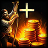
| Skill Information | Tier 1 | Tier 2 | Tier 3 | Tier 4 | Tier 5 |
|---|---|---|---|---|---|
| Increase earning gold when boarding players | +2% Gold | +5% Gold | +10% Gold | +15% Gold | +20% Gold |
Gain of the Tides – Sub Skill
Activates Elite Points earning when using Healing Cannonball and increases Healing Cannonball damage.
Positive effect: starting from Tier 3, Healing Cannon Range is increased up to Tier 5.
Daily elite point earnable limit from Healing Cannonball: 200,000 Elite Points.
| Skill Information | Tier 1 | Tier 2 | Tier 3 | Tier 4 | Tier 5 |
|---|---|---|---|---|---|
| Activate Elite Points earning from Healing Cannonball | 10% EP | 20% EP | 40% EP | 70% EP | 100% EP |
| Increase Healing Cannonball Damage | +30% Damage | +50% Damage | +75% Damage | +90% Damage | +100% Damage |
| Increase Healing Cannon Range | +1 Heal Range | +2 Heal Range | +3 Heal Range |
Master of the Sea Winds – Sub Skill
Increases ship speed.
Bonus effect: at Tier 5, removes destroyed sail speed negative effect.
| Skill Information | Tier 1 | Tier 2 | Tier 3 | Tier 4 | Tier 5 |
|---|---|---|---|---|---|
| Increase Ship speed | +2% Speed | +4% Speed | +6% Speed | +8% Speed | +10% Speed |
| Removing Destroyed Sail negative speed | – | – | – | – | Active |
Respawn Prosperity – Sub Skill
Increases Ship Respawn Hit Points.
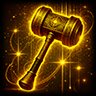
| Skill Information | Tier 1 | Tier 2 | Tier 3 | Tier 4 | Tier 5 |
|---|---|---|---|---|---|
| Increase Ship Respawn Hit Point | +1,000 HP | +2,000 HP | +3,000 HP | +4,000 HP | +10,000 HP |
Battle Master – Sub Skill
Increases earning Battle Points from players.
Positive effect: starting from Tier 3, increases earning Season Points from players up to Tier 5.
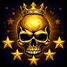
| Skill Information | Tier 1 | Tier 2 | Tier 3 | Tier 4 | Tier 5 |
|---|---|---|---|---|---|
| Increase earning Battle Points from players | +1 point | +2 points | +2 points | +2 points | +3 points |
| Increase earning Season Points from players | +1 point | +2 points | +3 points |